Diody a LED
1. Obyčejná dioda
Dioda je elektronická polovodičová součástka, která propouští elektrický proud pouze jedním směrem. Můžeme si ji jednoduše představit jako jednosměrný ventil pro elektrický proud.
Používá se například:
- k usměrnění střídavého proudu,
- k ochraně obvodu před přepólováním,
- k zabránění průchodu proudu nežádoucím směrem.
Schematická značka
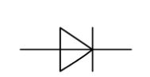
Schematická značka obyčejné diody. Svislá čára ve značce označuje katodu.
Jak dioda vypadá
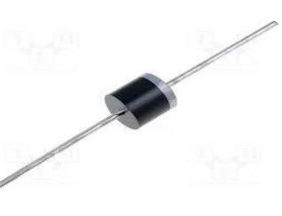
Příklad běžné diody.
Na pouzdře diody bývá proužek. Tento proužek označuje katodu.
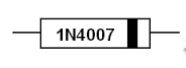
Černý proužek na pouzdře označuje katodu.
Vývody diody
- Anoda (A) se při běžném zapojení připojuje k plusu (+).
- Katoda (K) se připojuje k minusu (−).
- Katodu poznáme podle proužku na pouzdře nebo podle svislé čáry ve schematické značce.
Propustný směr
Když je anoda připojena k plusu a katoda k minusu, dioda je zapojena v propustném směru. Proud prochází a žárovka svítí.
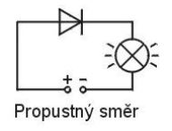
Závěrný směr
Když zapojení otočíme, dioda je v závěrném směru. Proud téměř neprochází a žárovka nesvítí.
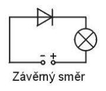
Jednoduché pravidlo: proužek na diodě = katoda = strana k minusu při propustném zapojení.
2. LED
LED je dioda, která při průchodu proudu svítí. Zkratka LED pochází z anglického názvu Light Emitting Diode – světlo vyzařující dioda.
LED se používají jako kontrolky, displeje, osvětlení a signalizační světla.
Jak LED vypadají
LED se vyrábějí v různých barvách, velikostech a tvarech.
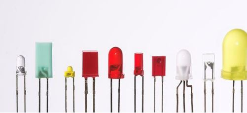
Anoda a katoda LED
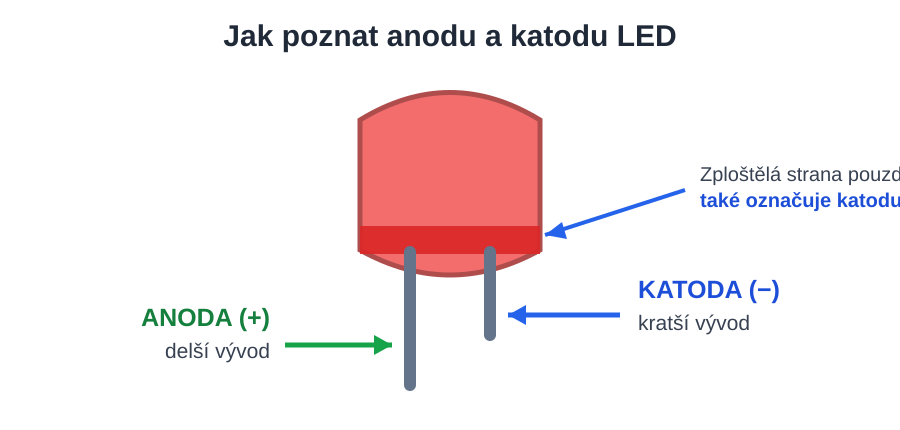
- Delší vývod je anoda (+).
- Kratší vývod je katoda (−).
- Zploštělá strana plastového pouzdra také označuje katodu.
Jednoduché zapojení LED
LED připojujeme v tomto pořadí:
plus zdroje → rezistor → delší vývod LED (anoda) → kratší vývod LED (katoda) → minus zdroje
Rezistor omezuje proud a chrání LED před zničením. LED proto nepřipojujeme přímo ke zdroji napětí bez rezistoru.
Když LED zapojíme obráceně, obvykle nesvítí.
3. Voltampérová charakteristika LED
Voltampérová charakteristika ukazuje, jak se mění proud LED při změně napětí. Do určitého napětí protéká jen velmi malý proud. Po dosažení propustného napětí začne proud rychle růst.
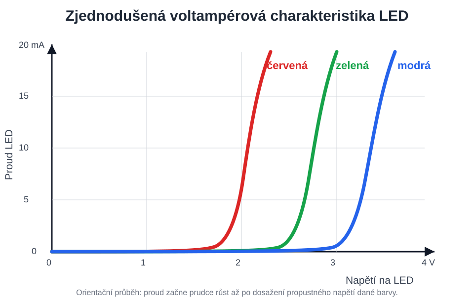
Zjednodušené orientační porovnání. Červená LED se rozsvítí při nižším napětí než zelená a modrá LED.
Podrobnější voltampérová charakteristika
Následující graf ukazuje také závěrný směr, tedy oblast záporného napětí, a orientační mezní hodnoty běžné indikační LED.
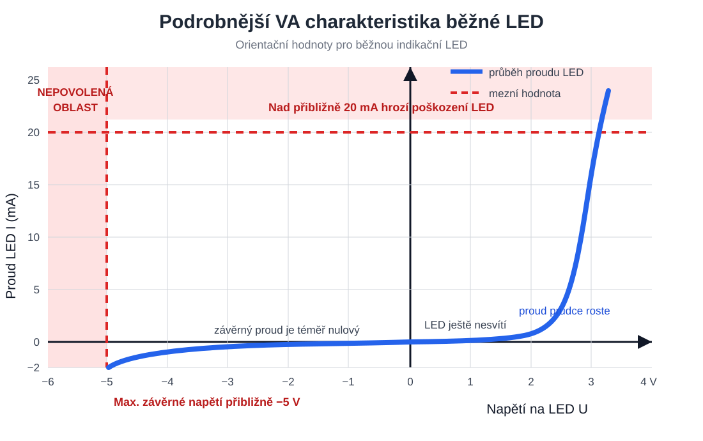
- V propustném směru začne po dosažení propustného napětí proud velmi rychle růst.
- Běžná indikační LED má typický maximální trvalý proud přibližně $20\ \mathrm{mA}$. Vyšší proud ji může zahřát a zničit.
- V závěrném směru je proud téměř nulový. Typické maximální závěrné napětí bývá přibližně $5\ \mathrm{V}$, v grafu je tedy vyznačeno jako $-5\ \mathrm{V}$.
- LED není určena k běžnému provozu v závěrném směru.
Hodnoty $20\ \mathrm{mA}$ a $5\ \mathrm{V}$ jsou orientační pro běžné malé indikační LED. Přesné maximální hodnoty je vždy nutné ověřit v katalogovém listu konkrétní LED.
4. Napětí LED podle barvy
Každá barva LED má jiné přibližné propustné napětí.
| Barva LED | Přibližný úbytek napětí |
|---|---|
| Infračervená | $1{,}6\ \mathrm{V}$ |
| Červená | $1{,}8$ až $2{,}1\ \mathrm{V}$ |
| Oranžová | $2{,}2\ \mathrm{V}$ |
| Žlutá | $2{,}4\ \mathrm{V}$ |
| Zelená | $2{,}6\ \mathrm{V}$ |
| Modrá | $3{,}0$ až $3{,}5\ \mathrm{V}$ |
| Bílá | $3{,}0$ až $3{,}5\ \mathrm{V}$ |
| Ultrafialová | $3{,}5\ \mathrm{V}$ |
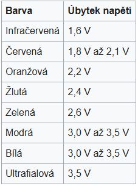
5. Polovodičové materiály pro různé barvy LED
Barva LED závisí na použitém polovodičovém materiálu. V tabulce jsou uvedeny běžné materiály podle přiloženého podkladu.
| Barva | Vlnová délka | Používané polovodičové materiály |
|---|---|---|
| Infračervená | $\lambda > 760\ \mathrm{nm}$ | GaAs, AlGaAs |
| Červená | $610 < \lambda < 760\ \mathrm{nm}$ | AlGaAs, GaAsP, AlGaInP, GaP |
| Oranžová | $590 < \lambda < 610\ \mathrm{nm}$ | GaAsP, AlGaInP, GaP |
| Žlutá | $570 < \lambda < 590\ \mathrm{nm}$ | GaAsP, AlGaInP, GaP |
| Zelená | $500 < \lambda < 570\ \mathrm{nm}$ | InGaN/GaN, GaP, AlGaInP, AlGaP |
| Modrá | $450 < \lambda < 500\ \mathrm{nm}$ | ZnSe, InGaN, SiC, Si |
| Fialová | $400 < \lambda < 450\ \mathrm{nm}$ | InGaN; červená/modrá LED s fialovým luminoforem |
| Ultrafialová | $\lambda < 400\ \mathrm{nm}$ | diamant, nitrid boru, AlN, AlGaN, AlGaInN |
| Bílá | celé viditelné spektrum | modrá nebo ultrafialová LED se žlutým luminoforem |
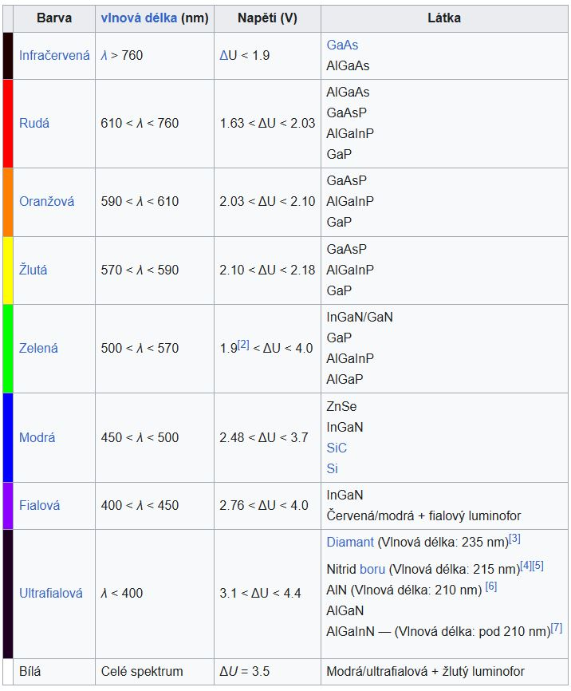
Stručné shrnutí
- Obyčejná dioda propouští proud jen jedním směrem.
- Anoda patří k plusu, katoda k minusu.
- Proužek na obyčejné diodě označuje katodu.
- LED při průchodu proudu svítí.
- U LED je delší vývod anoda (+) a kratší vývod katoda (−).
- LED vždy zapojujeme přes rezistor.
- U běžné indikační LED bývá maximální trvalý proud přibližně $20\ \mathrm{mA}$ a maximální závěrné napětí přibližně $5\ \mathrm{V}$.
- Různé barvy LED potřebují různá propustná napětí a používají různé polovodičové materiály.